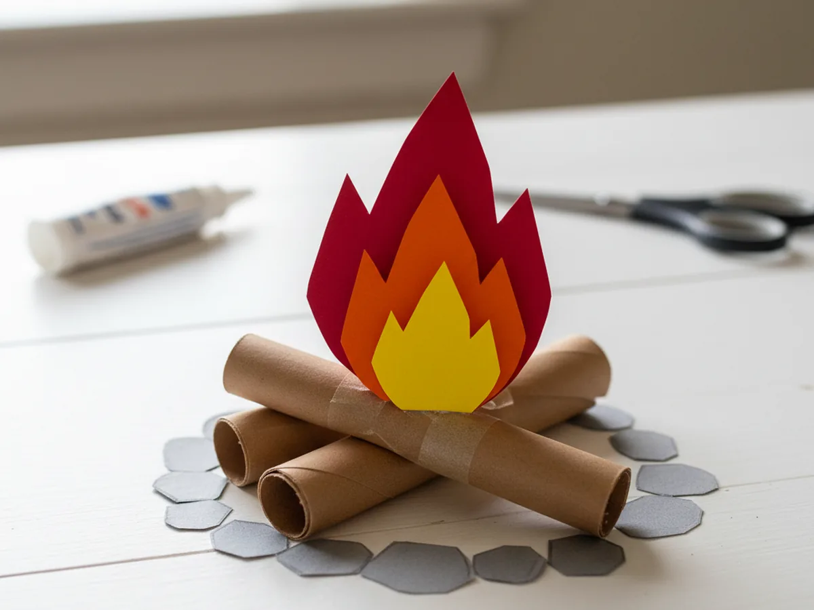
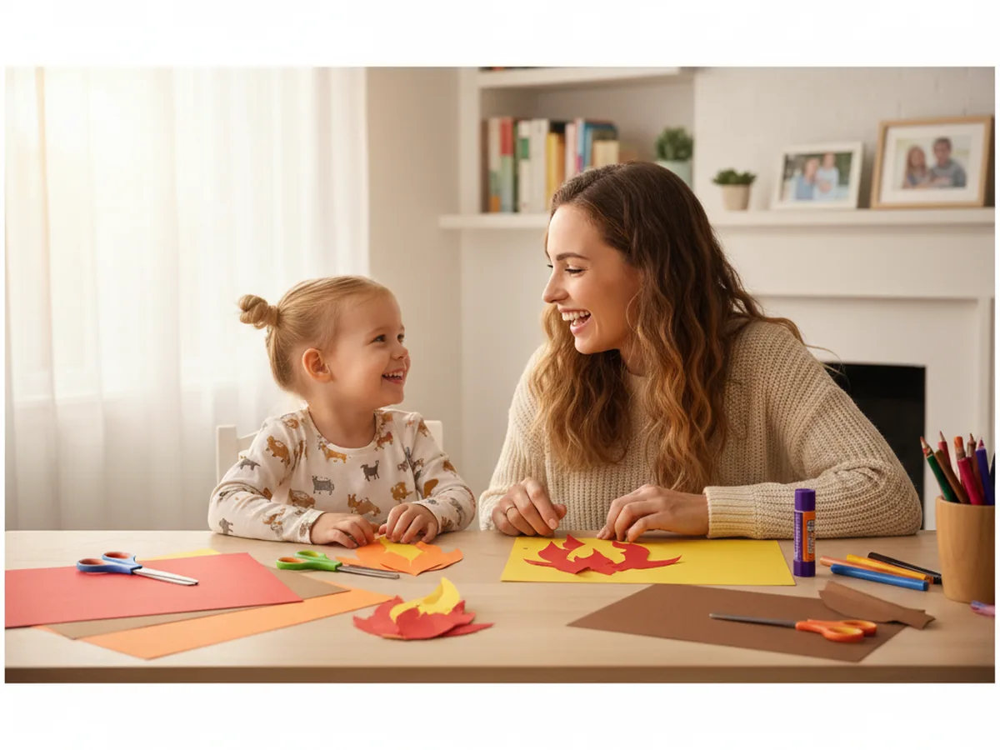
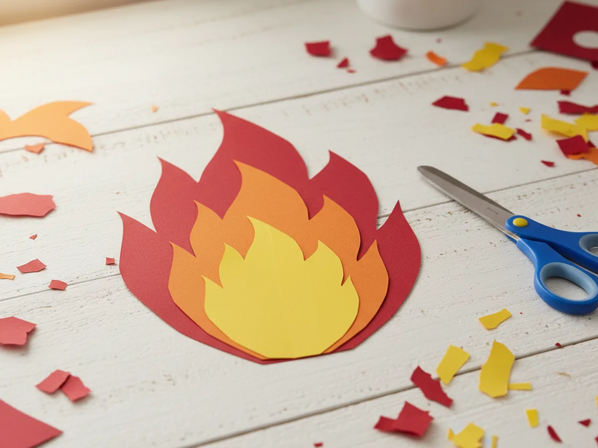
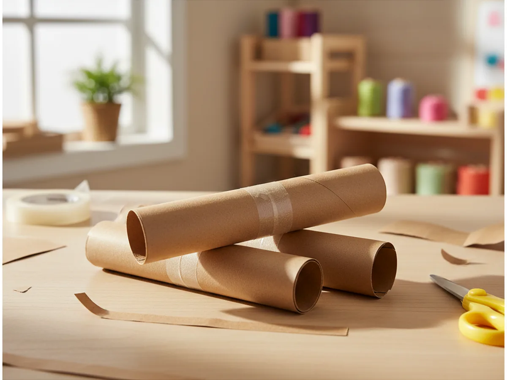
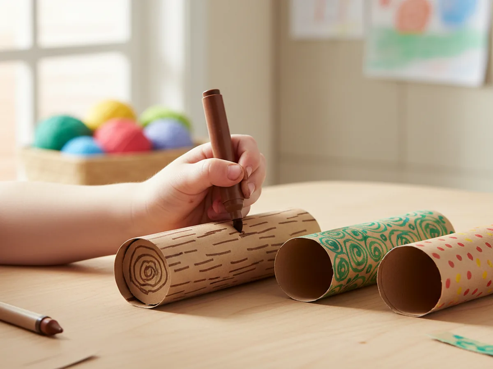
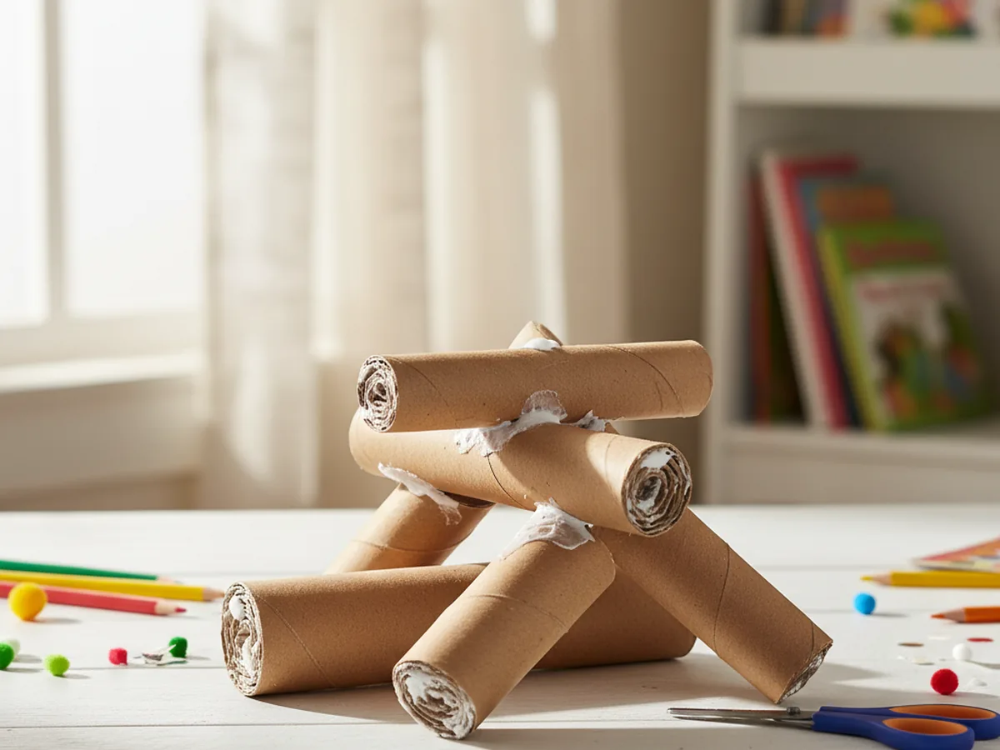
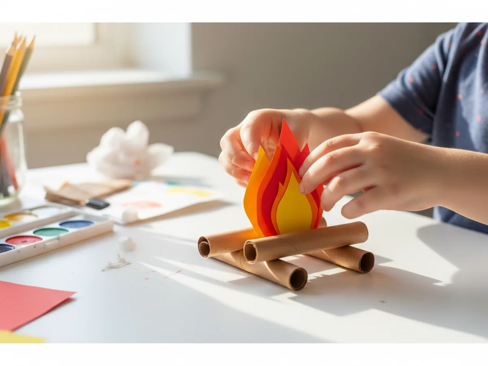
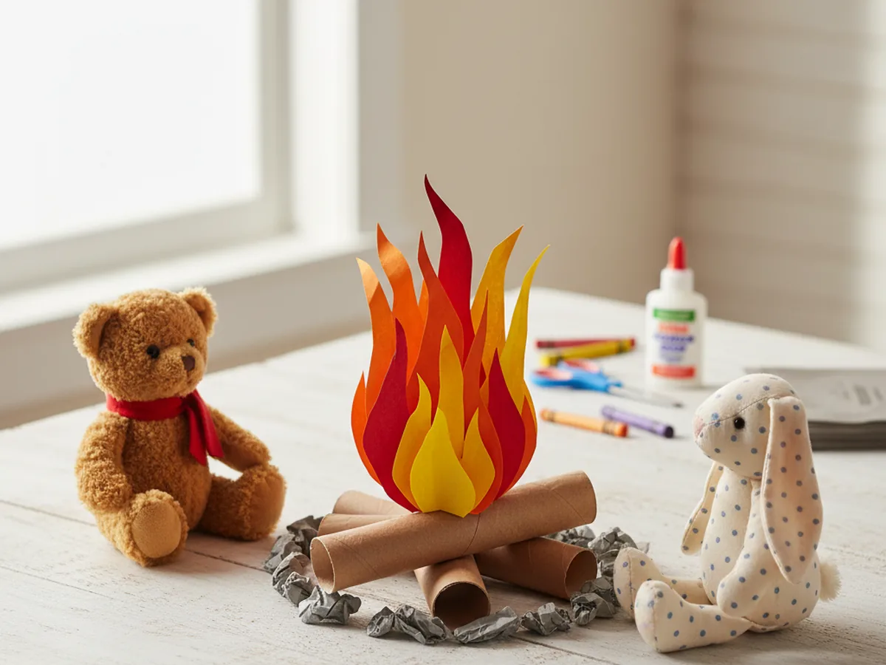

There is something so cozy about a campfire, even a pretend one. This paper campfire craft brings that warm, crackly feeling right to your kitchen table, no matches or smoke required. It is beginner-friendly, low-mess, and uses simple supplies you almost certainly already have at home. By the end, your little one will have a glowing paper fire to gather their toys around for an indoor camping adventure. 🔥
Why Kids Love This Craft
Kids are endlessly drawn to fire, and a pretend one lets them enjoy all the magic with none of the worry. This easy paper campfire craft hands them a glowing little fire they made themselves, which feels incredibly exciting to a small child. They get to choose how tall the flames reach and how the logs are stacked, so every campfire turns out a little different and a lot proud.
This campfire paper craft is also a gentle fine motor workout hiding inside a fun afternoon. Rolling the paper logs strengthens little hands, cutting the flame shapes builds scissor confidence, and lining up the layers teaches patience in the sweetest way. It feels like pure play, but it quietly helps with the same skills your child will use for writing and buttoning later on.
Best of all, the finished fire becomes a doorway to imaginative play. Set it in the middle of a blanket fort, gather stuffed animals around it for a pretend cookout, or pair it with a flashlight for an indoor camping night. A handmade paper campfire craft keeps the fun going long after the glue has dried. 🏕️

What You'll Need
Here is everything you need to make this paper campfire craft together. Almost all of it is probably already tucked into your craft drawer.
- Crayola construction paper, 12 colors, the brown sheets make the logs and red, orange, and yellow become the flames.
- Crayola classic broad line markers, perfect for adding bark lines and little details to the logs.
- Fiskars blunt-tip kid scissors, sized for ages 4 to 7 and easy on little hands.
- Elmer's washable purple glue sticks, the disappearing color helps kids see exactly where they have glued.
- Scotch Magic tape, holds the rolled paper logs closed so they keep their tube shape.
- A pencil for lightly sketching the flame shapes before cutting.
- A small scrap of gray paper for the little rocks around the base.
Step-by-Step Instructions
Follow along with this paper campfire craft step by step. Each part is short, friendly, and easy enough for a preschooler to do most of the work with a little help from you.
Step 1: Cut Out the Colorful Flames
Start with the part that makes this craft really glow. Help your child draw a tall, wavy flame shape on red construction paper, then a slightly smaller one on orange, and a smaller one still on yellow. The wavy, pointed tops are what give the fire its lively, dancing look, so do not worry about making them neat or matching.
Cut out all three flames and stack them with the big red flame in back, orange in the middle, and the little yellow one in front. This layered look is the heart of any good paper campfire craft, and your child will love seeing the colors come together like a real fire.

Step 2: Roll the Paper Logs
Now for the logs that will hold up your fire. Cut three or four rectangles from brown construction paper, each about five inches long. Help your child roll each rectangle into a tube about as thick as a marker, then hold a piece of tape along the seam to keep it closed.
Rolling paper can be tricky for tiny hands at first, so this is a lovely moment to work side by side. You can start the roll and let your child finish it, or pinch the tube while they press the tape on. Soon you will have a little pile of paper logs ready for your campfire.

Step 3: Add Bark Details to the Logs
Hand your child a brown or black marker and let them add a little personality to each log. Short lines running along the length of the tube look just like real bark, and a few small circles or rings drawn on the open ends look like the cut rings of a real log.
This is a relaxed, no-pressure step where there are truly no mistakes. Some kids love covering every inch in lines, others add just a few marks and call it done. Both look wonderful, and the bark details give this campfire paper craft a charming handmade touch.

Step 4: Stack the Logs into a Campfire
Time to build the fire. Help your child arrange the paper logs into a classic campfire shape, either crisscrossed like a tic-tac-toe stack or leaned together like a little teepee. Two logs on the bottom and one or two across the top is plenty to create that real campfire look.
Add a dab of glue where the logs touch so the stack holds together. Press gently for a few seconds to let it grab. A teepee shape leaves a nice open space in the middle for the flames, while a flat crisscross gives your finished paper campfire craft a sturdier base to stand on.

Step 5: Add the Flames in the Center
Here comes the moment your child has been waiting for. Glue the three flame layers together, then stand the flames up in the open center of the stacked logs. Tuck the bottom of the flames between the logs and add a little glue or tape so they stay upright and proud.
Step back and watch your fire come to life. The bright colors peeking up from the logs make this easy paper campfire craft look warm and almost glowing. Let your child fluff and adjust the flames until the fire looks just right to them. 💛

Step 6: Add Rocks and Display
Almost done! Tear or cut a few small oval rocks from gray paper and glue them in a little ring around the base of the fire, just like the stones that circle a real campfire. This tiny detail makes the whole scene feel finished and cozy.
Now find the perfect spot to show off your fire. Set it in the center of a blanket fort, surround it with stuffed animals for a pretend cookout, or place it on a shelf as a sweet reminder of your crafting afternoon. Step back and watch your kiddo beam at the paper campfire craft for kids you made together. 🔥

Variations to Try
Toddler Tear-and-Glue Version: Skip the scissors and let your youngest tear the flame shapes from red, orange, and yellow paper by hand. The torn edges look beautifully flame-like and the tearing is wonderful practice for little fingers that are not quite ready to cut.
Glowing Tissue Paper Fire: Swap the cut-paper flames for crumpled pieces of red, orange, and yellow tissue paper tucked between the logs. The bunched texture gives the fire a soft, three-dimensional glow that looks magical with a flashlight shining nearby at night.
S'mores Campfire Scene: Add a couple of paper marshmallows on the ends of brown paper sticks and let your child pretend to roast them over the fire. This turns the craft into a whole pretend cookout and pairs perfectly with a story about camping under the stars.
Final Thoughts
This paper campfire craft is one of those simple projects that gives back so much more joy than the few sheets of paper it takes. It is quick to set up, easy to follow, and the finished fire opens the door to hours of cozy pretend play. It works just as nicely on a rainy afternoon indoors as it does as a fun lead-in to a real backyard camping night.
Try making it together and let your child take the lead on the flames and the log stacking. They will want to gather every toy around their little fire, and you just might end up telling campfire stories in a pillow fort by bedtime. Happy crafting, friend!
More Crafts You'll Love
If your little camper loved this paper campfire craft, here are two more cozy paper projects that fit a fun outdoor theme: